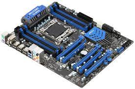
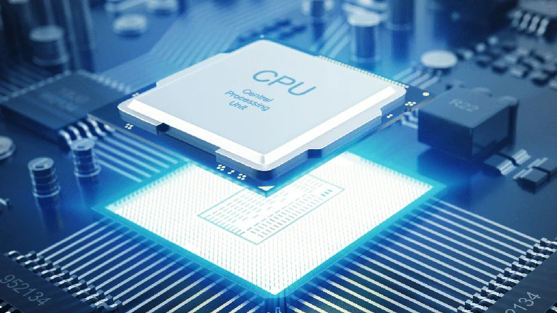
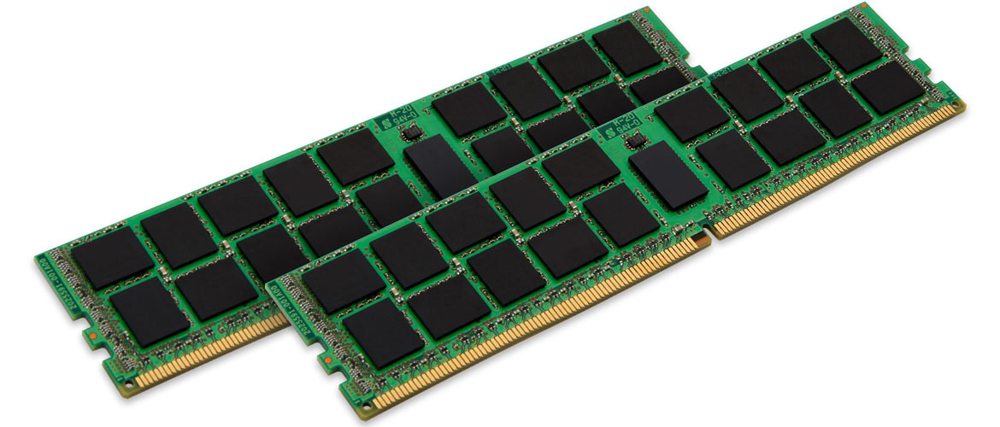
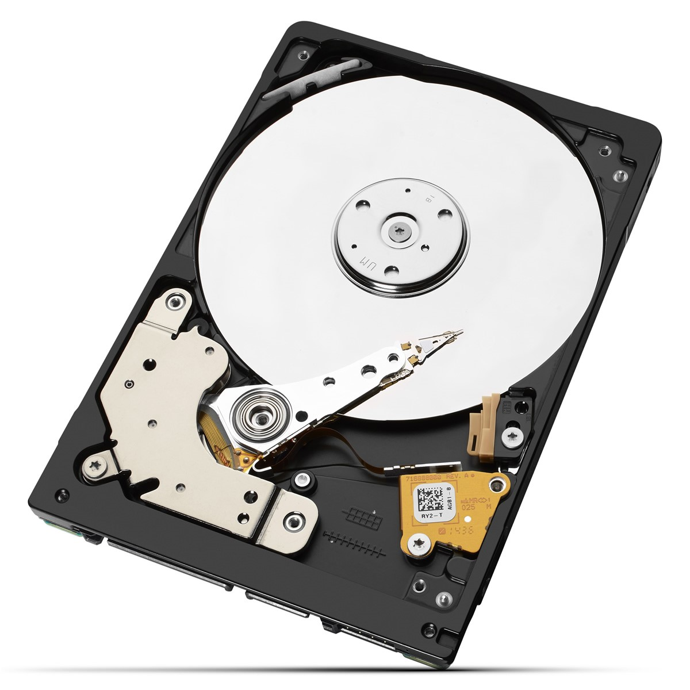
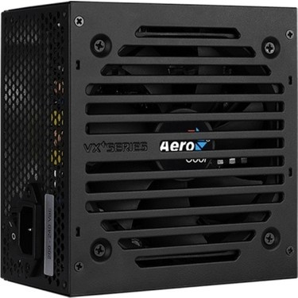
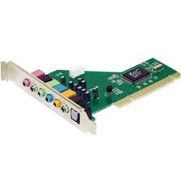
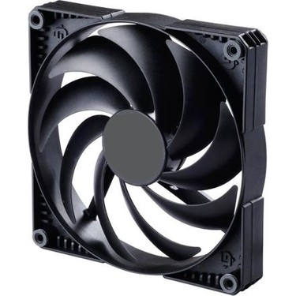

-
Anakart
Anakart, modern bir bilgisayar gibi karmaşık bir elektronik sistemin birincil ve en merkezî baskılı devre kartıdır. Apple bilgisayarlardaki muadiline logic board denir ve bazen mobo olarak kısaltılır.Fiziksel yapı olarak anakartlar özel alaşımlı bir blok üzerine yerleştirilmiş ve üzerinde RAM yuvaları genişleme kartı slotları devreler ve yongalar bulunan kare şeklinde bir plakadır. Bu plaka çalışma sistemini organize eder.
-
İşlemci
Merkezî işlem birimi, dijital bilgisayarların veri işleyen ve yazılım komutlarını gerçekleştiren bölümüdür. Çalıştırılmakta olan yazılımın içinde bulunan komutları işler.Merkezî işlem birimi aritmetik ve mantıksal işlem yapma yeteneğine sahiptir. Giriş ve çıkış birimleri arasında verilen yazılım ile uygun çalışmayı sağlar. MİB, makine dili denilen düşük seviyeli kodlama sistemi ile çalışır; bu kodlama sistemi bilgisayarın algılayabileceği işlem kodlarından oluşur..
-
Ekran Kartı

Ekran kartı, bilgisayarın görüntü vermesini sağlayan birimidir. Ekran kartları harici ISA, VLB, PCI, AGP veya PCI-Express veriyollarını kullanan PC kartları olarak anakart, üzerinde chipset veya CPU içerisinde yerleşik olarak bulunmaktadır. Günümüzde ekran kartı üreten 3 firma vardır. AMD, NVIDIA ve Intel'dir.
-
Bellek(Ram)
Rastgele erişimli hafıza veya rastgele erişimli bellek mikroişlemcili sistemlerde kullanılan ve genellikle çalışma verilerini ve makine kodunu depolamak için kullanılan herhangi bir sırada okunabilen ve değiştirilebilen bir tür geçici veri deposudur.
-
Sabit Disk(Harddisk)
Sabit disk ya da Hard disk kısaca HDD ya da Türkçesi ile sabit disk sürücüsü veri depolanması amacı ile kullanılan manyetik kayıt ortamlarıdır.Sabit disklerin en yoğun kullanım yeri bilgisayarlardır. Ses, görüntü, yazılımlar, veritabanları gibi büyük miktarlarda bilgi, gerektiğinde kullanılmak üzere sabit disklerde saklanır. Günümüzde sabit diskler veri aktarımında son derece hızlanmış olsalar da elektromekanik yapıda olduklarından RAM'lara göre yavaştırlar. Bilgisayarlarda yardımcı ve kalıcı bellek olarak kullanılırlar.
-
Güç Kaynağı
Güç kaynağı, bir sistem ya da düzeneğin gereksinimi olan enerjiyi sağlamak için kullanılan birimlerin genel adı. Cep telefonu ya da el feneri pili, bir pili doldurmak için kullanılan adaptör, bir bilgisayarın gereksinimi olan gücü üreten donanım birer güç kaynağıdırlar.
-
Ses Kartı
Ses kartı, bilgisayarda analog ve dijital ses işlevlerini yerine getiren elektronik birimdir. Dahili olarak PCI- veya PCI-Express kart yuvalarına takılan kart türleri olduğu gibi, harici olarak USB bağlantı noktasına bağlanan, PCMCIA yuvalarına takılan ve profesyonel alanlarda kullanılmak üzere Güvenlik duvarı girişine de bağlanabilen versiyonları mevcuttur.
-
Fan
Bilgisayar fanı, aktif soğutma için kullanılan bilgisayar kasasının içindeki veya kasasına takılan herhangi bir fandır. Fanlar, dışarıdan kasaya daha soğuk hava çekmek, içeriden sıcak havayı dışarı atmak ve belirli bir bileşeni soğutmak için havayı bir ısı emici boyunca hareket ettirmek için kullanılır